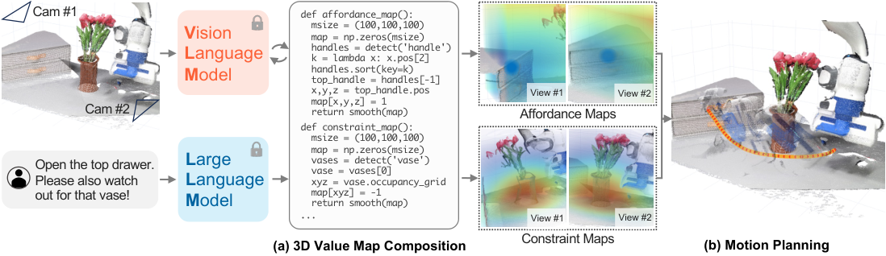

VoxPoser
语言先变成三维空间中的“哪里好、哪里不能去”，运动规划再寻找轨迹。
VoxPoser: Composable 3D Value Maps for Robotic Manipulation with Language Models
五类真实任务各 10 次：静态成功率 88%，扰动下 70%；原语基线分别为 24% 和 0%。
01这篇要解决什么？
“把杯子放到右边，同时避开花瓶”既有目标，也有沿途约束。VoxPoser 不只生成一串动作名称，而是生成代码，将感知到的对象转换成可组合的三维价值图，给连续运动一个可优化的目标。
02先看一个场景
指令是“把杯子从花瓶后面拿出来”。难处不在语义：杯子在哪、花瓶挡在哪、末端该走哪条弧线，都是连续空间里的量。技能菜单给不出这条轨迹，先喊一句“拿杯子”再指望控制器自己躲开花瓶也不成立。
03方法怎样运转？

- 01
planner 与 composer：两层语言模型程序
提示结构沿用 Code as Policies 的做法，让模型递归地调用自己生成的代码，每个语言模型程序（LMP）只负责一项功能，每个 LMP 的提示里放 5 到 20 组示例问答。语言侧用的是 OpenAI API 上的 GPT-4，不做任何微调。两个高层 LMP 分工明确：planner 收下完整指令，输出一串子任务；composer 收下其中一个子任务，用具体的语言参数去调用相应的价值图 LMP。
- 02
感知：三个现成模型串成一条链
语言模型提出一个物体或部件的查询后，先由开放词表检测器 OWL-ViT 给出检测框，再送进 Segment Anything 得到掩码，最后用视频跟踪器 XMEM 把这个掩码逐帧跟住。跟踪到的掩码配合 RGB-D 观测重建出物体或部件的点云。这条链路上三个模型都是拿来即用、不做训练，它确定的是本轮要控制的“关注实体”——可能是机器人末端，也可能是某个物体或物体的一个部件。
- 03
价值图：让模型写 NumPy，在 100³ 体素上赋值
论文定义了五类价值图：可供性、避障、末端速度、末端旋转、夹爪动作，每一类由各自的 LMP 生成，输出形状是 (100, 100, 100, k)，可供性与避障的 k 为 1（表示一个代价），旋转的 k 为 4（表示 SO(3)）。由于直接赋值出来的图很稀疏，可供性图做欧氏距离变换、避障图做高斯滤波来致密化，这样规划出的轨迹更平滑。任务代价的定义是把关注实体走过的离散坐标上的图值累加起来再取负，也就是 F_task = -Σ V(p_j)。
- 04
规划：只让两张图参与搜索，其余图逐点赋参数
进入规划器优化的只有可供性图与避障图，代价图是这两张归一化后按权重 2 与 1 加权求和再取负，用贪心搜索求出一串无碰撞的末端位置。求出位置序列之后，再用剩下的旋转图、速度图、夹爪图在每个路点上补齐参数，得到完整的 6-DoF 轨迹。更一般的形式是零阶优化：随机采样若干条轨迹，用这个目标函数逐条打分。
- 05
执行：只走第一个路点，5 Hz 重新规划
整套优化放在模型预测控制框架里，每次只执行合成轨迹的第一个路点，然后拿最新观测重新规划，频率是 5 Hz。语言模型在环却仍然跑得动，是因为同一个子任务里生成的代码始终不变，可以把它的输出缓存下来重复使用。动力学方面机器人自身的模型是已知的，多数任务直接假设场景静止；只有当关注实体是物体时才用一个启发式的平面推动模型（以接触点、推动方向、推动距离参数化，把点云整体平移），用随机打靶的 MPC 求解参数后调用一个预定义的推动原语。
subtasks = planner_LMP(instruction) # GPT-4，沿用 CaP 的递归 LMP 提示
for l in subtasks:
code = composer_LMP(l) # 同一子任务内只生成一次，之后缓存
while not done(l):
rgbd = camera()
pcd = xmem(sam(owlvit(rgbd, 物体/部件查询))) # 三个现成模型串成感知链
V_aff, V_avd, V_rot, V_vel, V_grip = exec(code, pcd) # 各自 100×100×100
cost = -(2 * norm(edt(V_aff)) + 1 * norm(gauss(V_avd))) # 只有两张图进优化
path = greedy_search(cost, 已知机器人动力学)
traj = attach(path, V_rot, V_vel, V_grip) # 其余图逐点补成 6-DoF
execute(traj[0]) # 只走第一个路点，5 Hz 重规划
# 终止条件：当前子任务达成后取下一个 l；关注实体是物体时改用启发式平面推动模型方法与结果的原文定位见本页引用。
04跟着这个场景走一遍
教学推演：回到上面的场景。第一步，planner 把它拆成“抓住杯子”“把杯子搬到台面前沿”这样的子任务，composer 接过第一个子任务，带着具体的语言参数去调用价值图 LMP，这些提示的写法沿用 Code as Policies 的递归 LMP 结构，底下是不微调的 GPT-4。第二步，代码里对“杯子”“花瓶”发起感知查询，OWL-ViT 给框、Segment Anything 给掩码、XMEM 逐帧跟住，配合 RGB-D 重建出两者的点云，本轮的关注实体确定为机器人末端。第三步，可供性 LMP 在 100×100×100 的体素上把杯子附近赋成高值，避障 LMP 把花瓶周围赋成需要回避的区域，前者做欧氏距离变换、后者做高斯滤波把稀疏的赋值摊开；此外旋转图约定末端朝向，夹爪图约定在哪一格闭合。第四步，只有可供性与避障两张图进入贪心搜索，按权重 2 与 1 归一化加权求和再取负得到代价图，搜出一串绕开花瓶、伸向杯子的末端位置，随后在每个位置上补齐旋转、速度与夹爪参数。第五步，只执行第一个路点就重新感知、重新规划，频率 5 Hz；代码本身在这个子任务里不再重生成，只是缓存输出反复求解。所以花瓶被人挪动时，下一帧的点云变了，避障图跟着变，新轨迹自然绕开新位置——关键在于目标与约束是在同一次求解里被一起考虑的，而不是先生成一句“拿杯子”再指望控制器自己躲开障碍。这套机制解决不了的是接触：多数任务里环境动力学被假设为静止，只有物体推动这一类才有一个手写的平面模型，所以开瓶这种靠接触定成败的任务，目标几何再正确也会掉下来。与 ReKep 对照看最清楚：这里把目标写成空间中的值，那边把目标写成关键点关系的约束函数。
05实验到底表现怎样？
表 1 的真实任务为移动并避障、摆桌、关抽屉、开瓶、扫垃圾，各设置每项 10 次；对照是使用预定义简单原语的 LLM 系统。表 2 另报告 13 项仿真任务。
作者报告的实验结果 · v2
| 表 1 真实任务 | 原语基线：静态 / 扰动 | VoxPoser：静态 / 扰动 |
|---|---|---|
| 移动并避障 | 0/10 / 0/10 | 9/10 / 8/10 |
| 关抽屉 | 0/10 / 0/10 | 10/10 / 7/10 |
| 开瓶 | 5/10 / 0/10 | 7/10 / 5/10 |
| 五类任务总体 | 24% / 0% | 88% / 70% |
原始证据：价值图和规划：§3 ↗ · 真实与仿真结果：表 1–2 / §4 ↗
扰动后的 70% 是本文有解释力的数字：闭环空间重规划能够恢复部分变化，但没有完全消除物理困难。开瓶从 7/10 降到 5/10，也提醒读者复杂接触并不只由目标几何决定。
06收益来自哪里，又停在哪里？
消融与机制证据
这个原语对照检验了联合空间表达与规划的整体收益，并非只移除一个模块的严格单变量消融。原文还研究在线动力学学习；“不训练任务策略”不能理解成系统完全没有模型与工程先验。
结论的适用边界
点云定位、地图分辨率和动力学近似决定可解范围。语言目标正确、价值图合理，仍可能因为姿态或接触模型不准确而失败。模型来源上这篇几乎全是现成件：语言侧 GPT-4，感知侧 OWL-ViT、Segment Anything 与 XMEM 串成一条链，机器人自身动力学用已知模型，论文强调整个过程不给任何一个组件追加训练。作者自己写的是各个 LMP 的提示（每个 5 到 20 组示例）、价值图的后处理（可供性做欧氏距离变换、避障做高斯滤波）、代价图的加权方式与贪心搜索规划器，以及那个平面推动的启发式动力学模型。唯一会拟合参数的地方在 §3.4：当任务涉及接触时，才用在线采集的转移数据学一个动力学模型，并拿零样本轨迹当采样先验缩小搜索范围。所以“不训练任务策略”指的是没有针对任务的策略学习，不等于系统里没有任何模型拟合或工程先验。
07放回全书的脉络
与 ReKep 对照看最清楚：VoxPoser 把目标写成空间中的值，ReKep 把目标写成关键点关系的约束函数；两者都把语言输出交给数值求解器。
08把阅读变成一个小研究
先在二维平面模拟“目标 + 障碍”价值图，再移动障碍。比较固定轨迹、每步重新规划，并逐步增加感知偏移。
先自己回答：这项实验怎样才有解释力？
这个简化实验能解释组合目标与反馈的作用，不能验证真实接触。将规划可行率、碰撞率、完成时间分开报告，避免只展示一条漂亮轨迹。
- 用自己的话说出这篇改变了哪个模块。
- 画出它的输入、输出和一次失败如何被处理。
- 复述一个结果，同时说清基线、指标与实验条件。这一问不给答案，材料在第 05 节。
先自己答，再看前两问的参考答案
这篇改了哪个模块改的是世界与目标的表示形式：语言不再落成技能名或一串动作，而是落成三维空间里的一组价值图——哪里该去、哪里要避开、末端怎么转、什么时候闭合夹爪，都被写成 100×100×100 体素上的数值，目标与沿途约束因此能在同一次数值求解里被一起考虑。决策的产物交给运动规划器而不是控制策略，系统里没有技能库。这篇不训练任何组件，语言、检测、分割、跟踪全是现成模型，机器人自身动力学用已知模型，只有涉及接触的任务才在线拟合一个动力学模型。
输入、输出与一次失败如何被处理输入是自然语言指令，它进的是 planner 与 composer 这两层 LMP；RGB-D 观测不直接进模型，而是由代码发起的物体或部件查询驱动 OWL-ViT、Segment Anything 与 XMEM 串成的感知链，重建出点云供价值图代码赋值。输出先是一段 NumPy 代码，运行后得到那几张价值图；只有可供性图与避障图归一化加权后进入贪心搜索，求出一串无碰撞的末端位置，其余图再在每个路点上补齐旋转、速度与夹爪参数，合成的 6-DoF 轨迹只执行第一个路点。这篇没有执行后的成功检测，也没有发现失败、诊断原因、改写计划这条通路。它靠的是频率换稳健——每个周期重新感知、重新赋值、重新求解，5 Hz 滚动重规划，花瓶被挪开或抽屉被重新拉开这类变化会在下一帧的点云里自动体现，扰动因此被吸收；但没有任何模块回答刚才那次做成了没有，接触类失败不会被识别，开瓶这种靠接触定成败的任务，目标几何再正确也只能任其掉下来。
语言先变成三维空间中的“哪里好、哪里不能去”，运动规划再寻找轨迹。
↗带着位置回到原文
首发日期用于时间排序；以下方法与结果对应 v2。数据为论文作者报告，本讲义没有独立复现实验。
QA就这一页提问或讨论
对某个数字、某条边界或某个推演有疑问，欢迎直接留言：讨论按页面分开，回复会保留在 XinrunXu/awesome-agentic-robotics-papers 的 Discussions 里，需要一个 GitHub 账号。